Gerçek Godot render görüntüleri; Android cihaz ekran görüntüsü değildir. Zemin/dev/mıknatıs/çekirdek efektleri oyunun gerçek hamlelerinden, ücretsiz karıştırma görüntüsü kontrollü hamlesiz test tahtasından alınmıştır.
Rapor · Performans · Bölüm dengesi · Testler
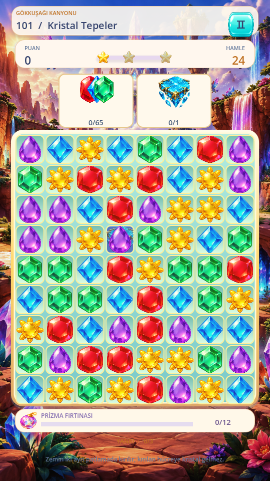
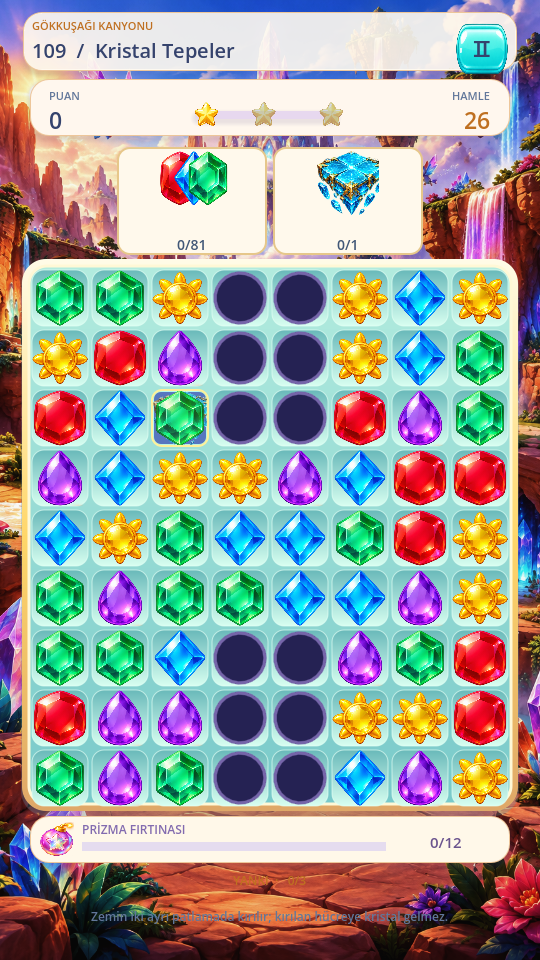
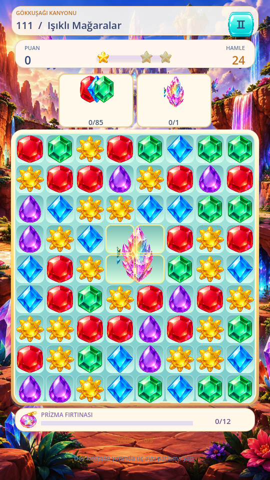
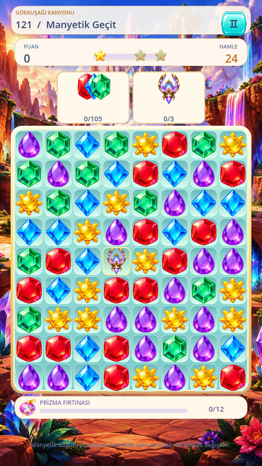
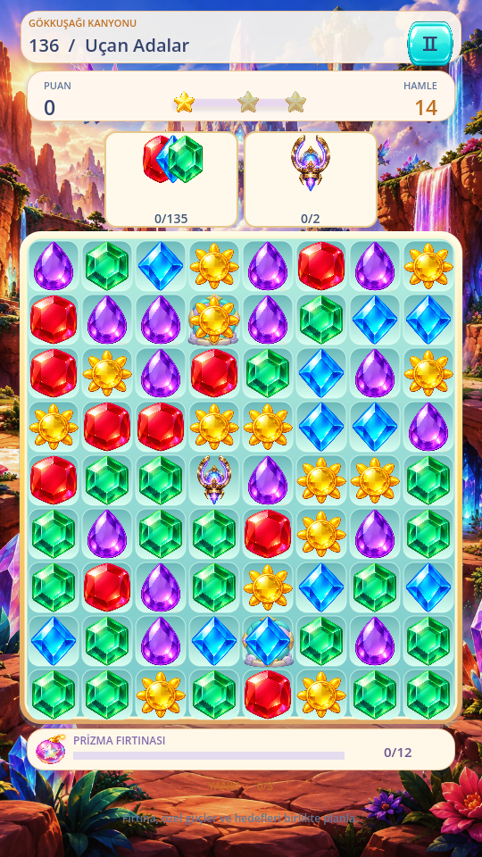
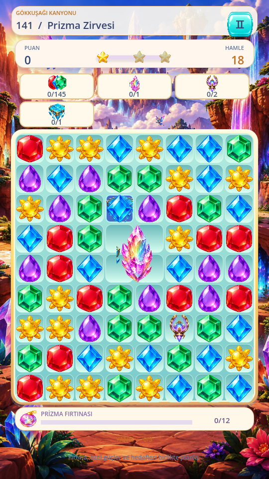
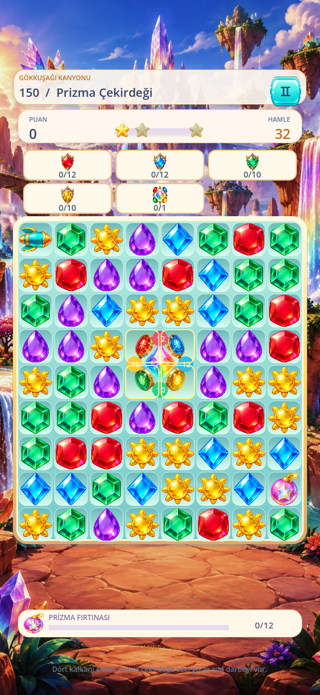
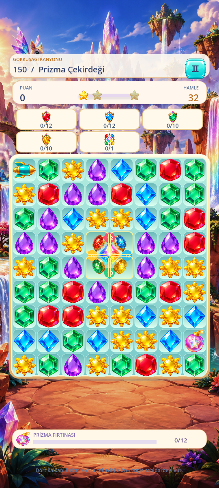
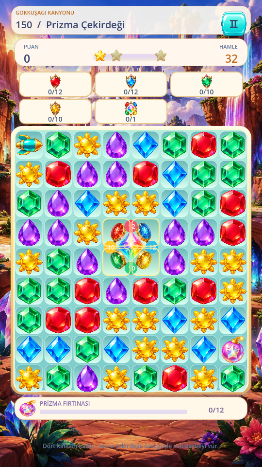
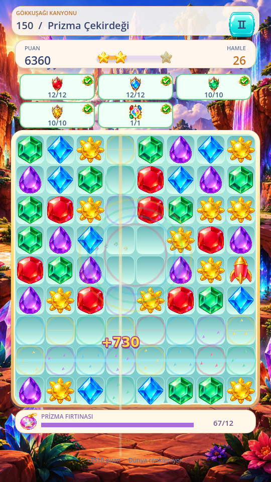
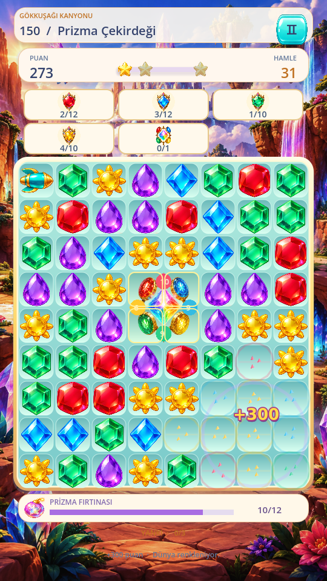
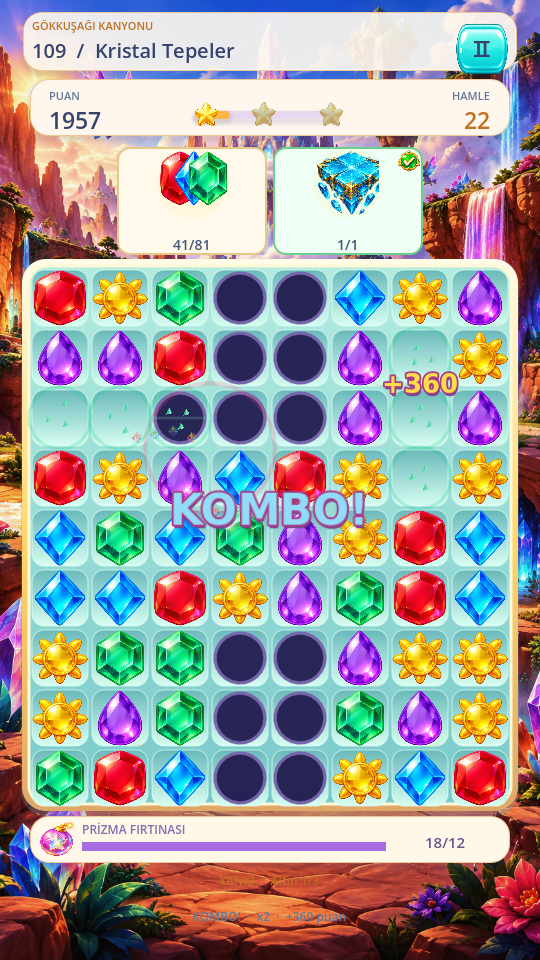
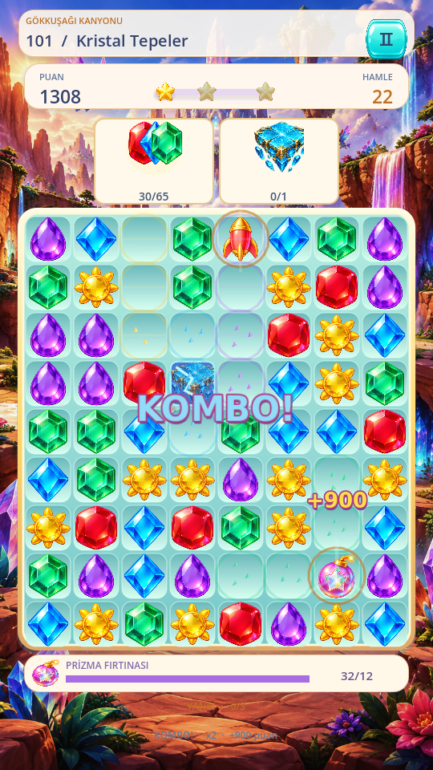
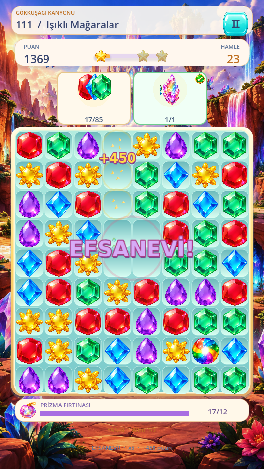
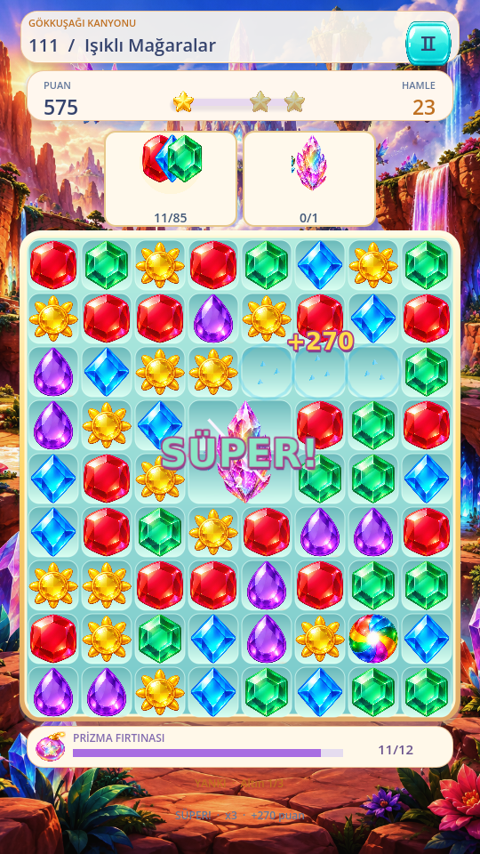
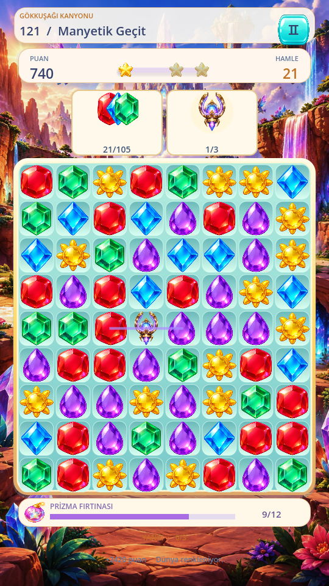
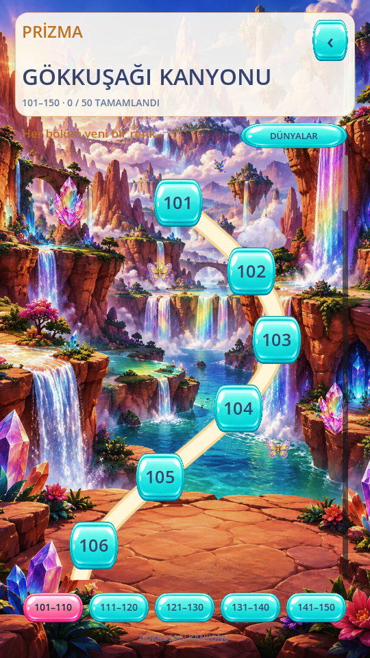
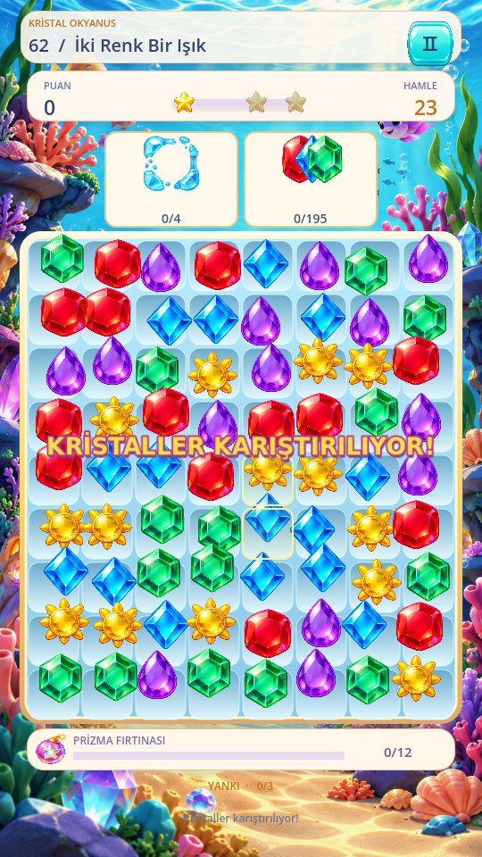
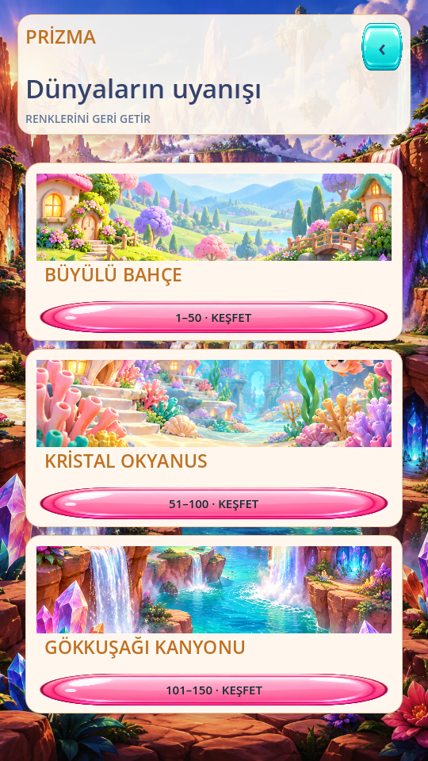